تقارير التلج · دلائل
تقارير يومية ديال التلج للي كيتزلجو: فين كاين التلج، شنو جاي، وفين تمشي تتزلج، من الخريطة ديال التلج ديال SnowScope ومحطات القياس. كل رقم جاي من المعطيات ديال داك النهار.
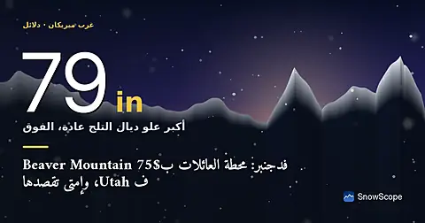
Beaver Mountain كاتعطي تذاكر بـ سعر ثابت 75 دولار بـلا حساب زيادة فـ أيام الازدحام. البداية ديال ديسمبر غالبا كاتكون رقيقة؛ جرب النص ديال الشهر أو بعد هكا متاع التلج يكون أكتر موثوق.
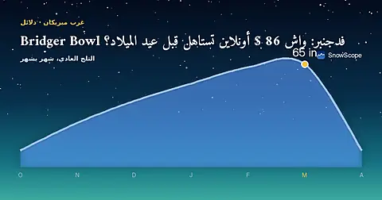
Bridger Bowl كتفرض 86 دولار أونلاين لـ 2026/27. الوسط ديال الجبل عندو 20 سم (50 سم) فـ 15 ديسمبر فـ نص الشتوات اللي فاتو؛ شيتاوة العيد كتحسن الاحتمالات لـ 78 %.

محطة التلج العالية فـ كولورادو تحتفظ بتذكرة المصعد للبالغين يوم الأسبوع بـ 49 دولار للموسم 2026-27؛ العلو ديال التلج فـ وسط الجبل يوصل لـ 66 سم بـ نص ديسمبر فـ الشتاء العادي. المعطيات من 13 نونبر 2026.
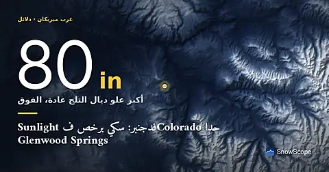
Sunlight قرب Glenwood Springs كتواجه رهان موسيم بدري فـ ديسمبر. بحال وسط الشهر كتوقع 67 سم فـ وسط الجبل، لكن غير 72% ديال الشتوات اللي فاتو اللي تولي فيها هاد العلو.
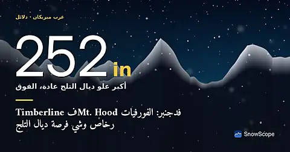
الجهة الوسطانية ديال Timberline فيها 132 سم ديال التلج الطبيعي فـ 15 دجنبر. الجهة الفوقانية توصل لـ 147 سم. التذاكر ديال النهار كاملو تبدا من 129 دولار فـ الأيام اللي فيها تخفيف.
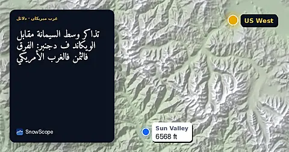
من Ski Cooper (49 $ فوسط السيمانة، 99 $ فالويكاند) حتى Mt. Baker (98.80 $ مقابل 115.42 $): فروقات الأثمنة ديال دجنبر اللي تأكدنا منهم فسبع محطات فالغرب الأمريكي، مع فرص التلج ديالهم.
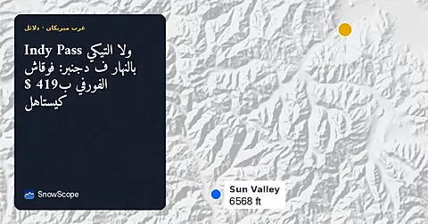
Indy Base Pass ب419 $، Indy+ ب469 $، يومين فكل محطة منخرطة. قارناه بالأثمنة ديال النهار اللي تأكدنا منهم ف7 محطات Indy ف دجنبر، ومعاهم فرص التلج ديالهم.
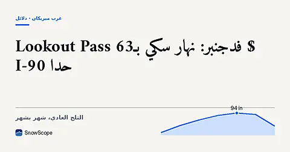
تذكرة Lookout Pass ديال أسبوع تكلف 63 دولار متحفوظة مقدما. بحال منتصف ديسمبر الجهة الفوقانية عادة تقف 30-37 سم (75-95 سم). معطيات من 13 نونبر 2026.
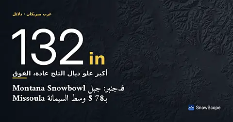
المحطة ديال Missoula قريبة بـ 7,530 قدم (2,296 م) مع بيليه ديال المصاعد 78 دولار فـ أيام الشغل. الجهات ديال الوسط والفوقانية تحتاز عادة 30–37 بوصة (76–93 سم) فـ نص ديسمبر. البيانات من 13 نونبر 2026.
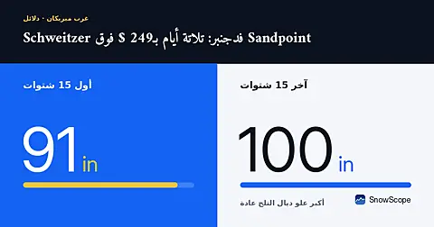
3-Pack ديال Schweitzer كتعطيك تلاتة أيام ب 249 دولار على جبل كيطلع من 4,010 فت إلى 6,390 فت. التلج فوسط الجبل فـ 15 ديسمبر كيوصل لـ 35 إنش (90 سم)، و 85 % من الشتوات اللي فاتو كانت فيها أكثر من 20 إنش (50 سم).
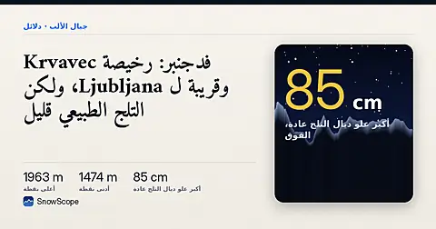
Krvavec فـ المنتصف ديال الجبل عندو 13 سم ديال التلج العادي فـ 15 دجنبر على حساب 46 شتوة، لكن أرض بيضا فـ 11 منهم. النهار واحد كيكلف 47 EUR.
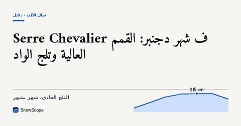
تزلج ف 157 كم ديال البيست ف Serre Chevalier، فين القمة ديال الجبل عندها 100 % ديال الاحتمال يكون فيها التلج ف نص دجنبر.
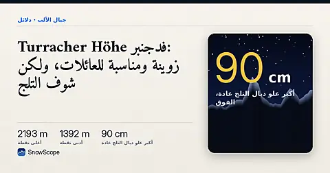
Turracher Höhe عندها 23 سم فـ منتصف الجبل فـ 15 دجنبر عادي، لاكن غير 39% من الشتوات اللي فاتو وصلو ليهم 30 سم هناك فـ منتصف دجنبر. البيانات من 13 نونبر 2026.
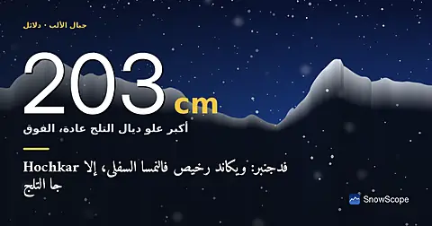
Hochkar فـ الوسط ديال الجبل عندها 38 سم فـ 15 ديسمبر عادي، و 63 % ديال الشتوات اللي فاتو عندهم 30 سم ولا أكتر فـ تاك الأسبوع. التاكيت ديال اليوم من 32,90 يورو فـ الأيام الهادية.
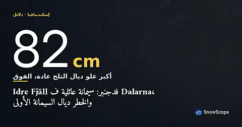
احتمالات التلج في Idre Fjäll في دجنبر تتحسن بشكل حاد بعد منتصف الشهر. في 13 نونبر، العمق النموذجي في منتصف الجبل في 15 دجنبر هو 32 سم.
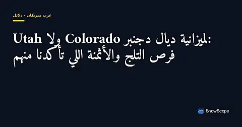
Brighton تتقدم فالبدايات ديال دجنبر بـ 37 بوصة (94 سم) تلج عادي فاليوم 15. Wolf Creek تلحقها قبل الكريسماس. أثمان وموثوقية مقارنة.
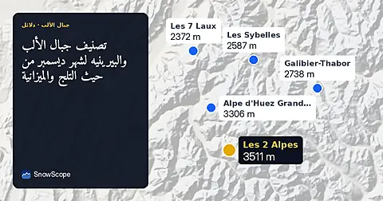
عشرة محطات ديال التلج فـ أوروبا مصنفين على حساب القيمة فـ ديسمبر، كيتصدروهم Les 2 Alpes بـ 75 سم ديال التلج فـ وسط الجبل.

Brundage Mountain كتعطي تلج موثوق فـ أول الموسم بقرب McCall، إيداهو. العلو ديال التلج فـ منتصف الجبل كيوصل لـ 30 إنش (77 سم) بحوالي منتصف ديسمبر، والبطاقات كتابدا من 65 دولار فـ أيام معينة.
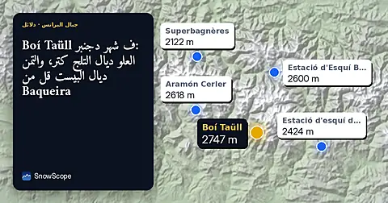
Boí Taüll كيبدا من 2039 م وكيغلب Baqueira Beret فالتمن ديال البيست، واخا التلج ديال بدايات دجنبر كيطلب شوية ديال الصبر.
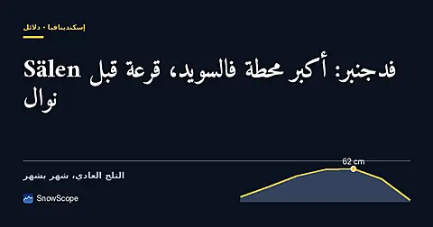
Sälen فدجنبر: 28 سم نهار 15 دجنبر عادي و 48 % ديال الشتوات فيهم 30 سم فنص دجنبر، قل من الثمانينات؛ و Trysil اللي حداها أحسن.
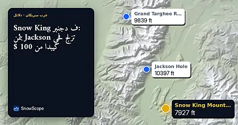
Snow King كاينة فالقاع ديال Jackson. بحدا منتصف دجنبر، الوسط ديال الجبل عادة كيكون فيه 28 سم (71 سم). المعطيات من 13 نونبر 2026.
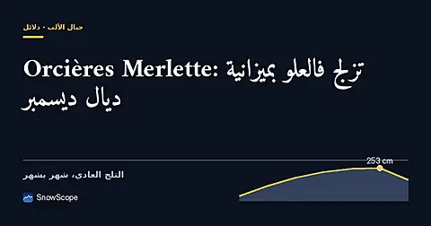
Orcières Merlette كتوفر قاعدة عالية فـ 1826 م و باص ديال 6 أيام من 227 EUR، هادشي اللي كيخليها اختيار موثوق لرحلة ديال التزلج فديسمبر.
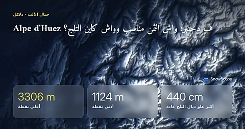
واش Alpe d'Huez مزيانة ف دجنبر 2026؟ حنا كنشوفو التوقعات ديال التلج، والثمن ديال 58,00 EUR، وكنقارنوها مع Les 2 Alpes.
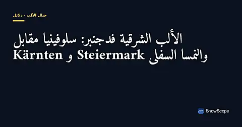
السكيباس فسلوفينيا هو الأرخص (Krvavec ب 205 EUR ل 6 أيام)، ولكن التلج الطبيعي فدجنبر قليل تما؛ Lachtal و Hochkar والكلاسيي ديال Möll أحسن.
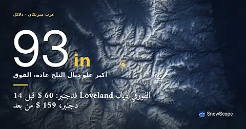
Loveland كتباع تذاكر $60 على الأنترنت لحد 13 دجنبر، بعد كيكون $159 من 14 دجنبر. متوسط التلج الجديد فأول دجنبر كيكون 20 انش (50 سم) فالجهة الوسطانية، بصح القاع أقل من نص العلو ديال وسط الشتا.
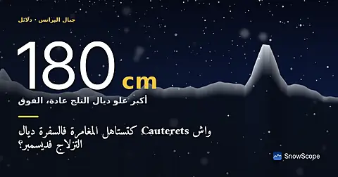
Cauterets كتوفر 25 كم ديال البيست بـ 46 EUR، ولكن التاريخ ديال التلج عندنا كيبين بلي أحسن فرصة باش تلقى التلج هي السيمانة اللخرة ديال ديسمبر.
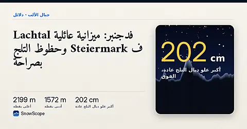
Lachtal كتسحب 62 يورو فـ اليوم والدراري اللي كايين معاهم أقل من 7 سنين كيتزلجو فابور. الجهة الوسطانية كان عندها 30 سم أو أكثر فـ 72 % ديال دجنبرات من النص ديال الشهر ولقدام. العلو ديال التلج فـ 13 نونبر 2026.
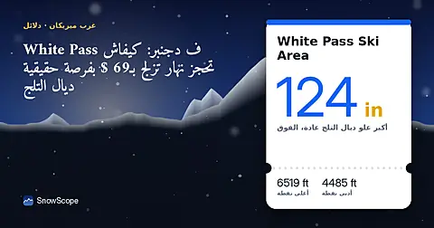
White Pass كيعطي جوائز للحجوزات المبكرة فـ أيام الشغل. بحال منتصف دجنبر، منتصف الجبل كيهز 102 سم فـ السنة العادية. البيانات من 13 نونبر 2026.
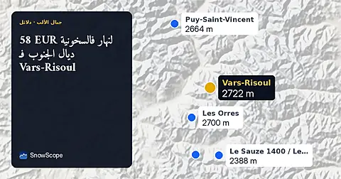
سكي فـ 131 كم ديال البيست فـ Forêt Blanche هاد دجنبر بـ فورفي ديال 6 أيام بـ 298 EUR.
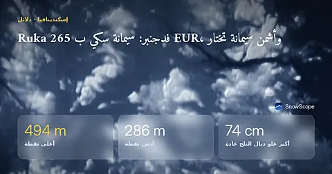
البطاقة ديال 6 نهار ف Ruka تكلف 265 يورو. فرصة التلج تقفز من 39% ف بداية ديسمبر لحد 85% ف أسبوع العيد. خطط ف منتصف الشهر أو بعد.
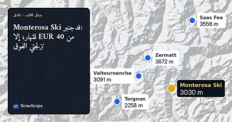
ف Monterosa Ski الباص ديال النهار أونلاين ما بين 40.00 و 71.00 EUR. فدجنبر التلج كاين الفوق: 124 سم عادة ف 3030 م، و 6 سم ف 1207 م.
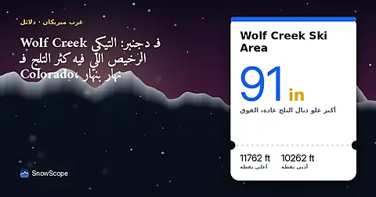
Wolf Creek فيها 34 إنش (87 سم) فالجهة الوسطانية فيوم 15 ديسمبر عادي. الأسعار الغالية تبدا من 20 ديسمبر. البيانات: 13 نونبر 2026.
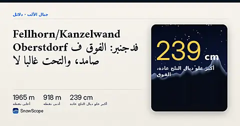
فـ 15 دجنبر فـ Fellhorn/Kanzelwand: 63 سم فـ 1965 م الجهة الفوقانية، 30 سم فـ نص الجبل، واحد 10 سم بـاش فـ 918 م القاعدة. جهز راسك على حالها.
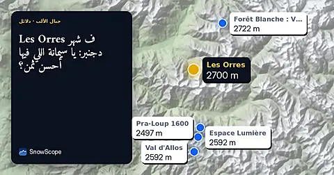
خطط للرحلة ديالك ف دجنبر 2026 لـ Les Orres وقارن بين تمن البيستات ديال السيمانة والتاريخ ديال التلج اللي عندنا ديال 46 شتوة اللي دازو.

الجهة الوسطانية ديال Hemavan فيها 82 سم ديال التلج فـ يوم عادي 15 دجنبر. كـ شتا من 46 شتا عندها 30 سم فلا أكثر فـ وسط دجنبر. البيانات من 13 نونبر 2026.
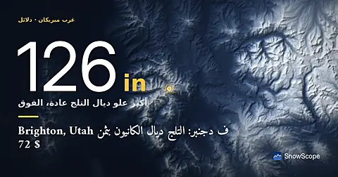
المحطة ديال Brighton فـ نص الجبل عندها عادة 94 سم فـ 15 ديسمبر. المعطيات من 13 نونبر 2026.
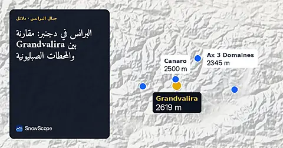
قارن بين Grandvalira والمحطات الصبليونية في دجنبر 2026 من ناحية العلو ديال التلج، العلو ديال ليفات، والأثمنة اللي كتبدا من 49.00 EUR.
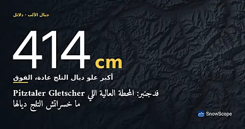
Pitztaler Gletscher كـايـحـافـظ عـلـى التـلـج ديـال دجـنـبـر بـشـي أحـسـن مـن بـزّاف ديـال المـحـطـات ديـال الـألـب: 87 سم فـ نـص الـجـبـل فـ نـص دجـنـبـر، كـاع الـشـتـوات الـقـريـبـة فـوق 30 سم. الـمـعـطـيـات 13 نـونـبـر 2026.

16 محطة ديال التلج فـ الولايات المتحدة مصنفة حسب احتمالات التلج فـ 15 دجنبر وثمن التذكرة ديال اليوم الكامل للراشدين. Grand Targhee متصدرة بـ 100% احتمال؛ خمسة محطات فيهم احتمالات فوق 80% مع التذاكر أقل من 80 دولار. المعطيات من 13 نونبر 2026.

إيلا بغيتي سيمانة د التزلج للعائلة فديسمبر فـ Astún-Candanchú بتكلفة ناقصة، وجد راسك لأواخر ديسمبر فين كيكون التلج مزيان فـ 67 % من الشتوات اللي فاتو فالجهة الفوقانية.
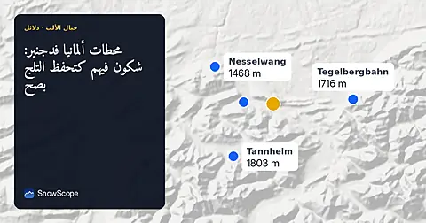
غير Zugspitze و الجهة الفوقانية ديال Fellhorn كايحتفظو بـ 30 سم بشكل موثوق فحدود منتصف دجنبر. البيست اللي تحت فالتلال البافارية كاينة رخصة بزاف بلاكن التلج كايقل بزاف. معطيات من 13 دجنبر 2026.
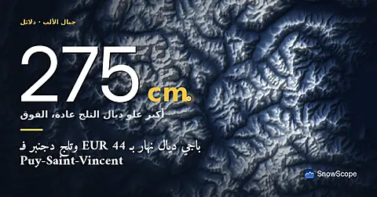
محطة Puy-Saint-Vincent كاتبازي باجي ديال نهار واحد للبالغين بـ 44 EUR مع تلج صحيح فـدجنبر الفوق، ومقارنة هادي مع الجار الكبير ديالها Serre Chevalier.

Grand Targhee كتحتفظ بالتلج الموثوق فـ دجنبر فـ كل الارتفاعات. فـ وسط الجبل، 46 سم (118 سم) هادا نورمال بحال 15 دجنبر، و100% ديال الشتوات كتوصل ل 20 سم (50 سم) أو أكثر. المعطيات من 13 نونبر 2026.
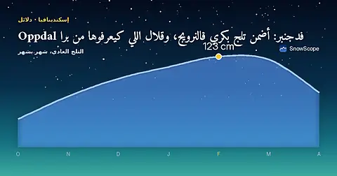
القاعدة ديال Oppdal فيها 60 سم ديال التلج فـ يوم 15 ديسمبر عادي، و93% ديال الشتوات اللي فاتو فيها 30 سم أولا أكثر فـ نص ديسمبر. البيانات من 46 شتوة.
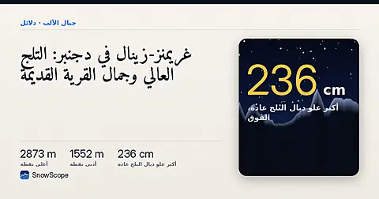
كاتوفر غريمنز-زينال 71 كم ديال البيستات وتلج مضمون في العلو للرحلة ديالك في دجنبر، مع باصات ديال 6 أيام بـ CHF 339,00.
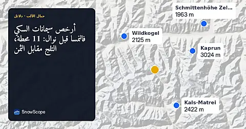
النمسا قبل نوال: Galtür ب 258 EUR و Kühtai ب 269 EUR ل 6 أيام، و 30 سم فكثر من 90 % ديال الشتوات؛ الكلاسييات أغلى، والمحطات الصغار مقامرة.

كتخطط لرحلة ف دجنبر لـ Baqueira Beret؟ شوف التاريخ ديال التلج عندنا، أثمنة التذاكر اللي كتبدا من 70,00 € لـ 'باس' ديال نهار واحد، وكيفاش كتقارن مع Astún-Candanchú.
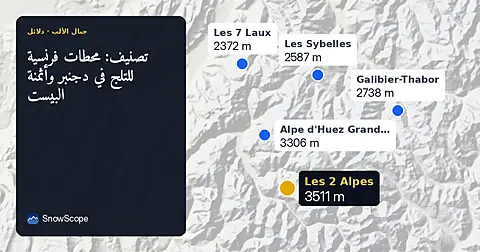
كنديرو تصنيف للمحطات ديال التلج ففرنسا على حساب احتمالات التلج فدجنبر وأثمنة البيست، كيبداو من 36,00 EUR لليوم للكبار فـ Les Karellis.

دجنبر يجيب غير 18 سم فالعمق ديال التلج فالمنتصف ديال الجبل فأوكايمدن، بحال 53 سم فمارس. البداية ديال الموسم فيها التلج قليل لكن ممكن. المعطيات من 13 نوفمبر 2026.
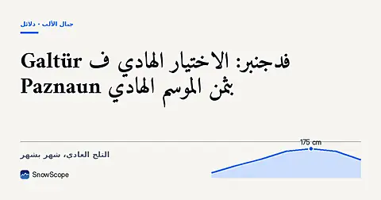
الجهة الوسطانية ديال Galtür كتحتفظ بـ 55 سم ف 15 ديسمبر عادي. تذاكر الموسم الخفيف كتكلف 55.50 يورو لحد 18 ديسمبر. البيانات من 46 شتوة، من 1980-81 لـ 2025-26.
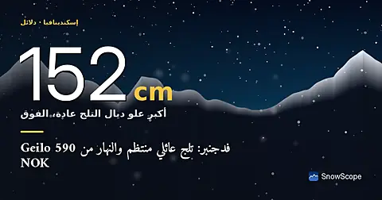
Geilo فدجنبر: 57 سم فالوسط نهار 15 دجنبر عادي، و 96 % ديال الشتوات فيهم 30 سم فنص دجنبر؛ النهار من 590 NOK (تقريبا 56 EUR).

Grandvalira غالبا ما كيتم التسويق ليها كوجهة رخيصة للتزلج فديسمبر، ولكن العلو ديال التلج الطبيعي فالباز فالمتوسط غير 9 سم فالشتوات اللي فاتو.

فـ 15 ديسمبر، Hemsedal كايوري 32 سم فالقاع، 70 سم فمنتصف الجبل و 106 سم فالقمة. الارتفاع هو اللي كايهم.
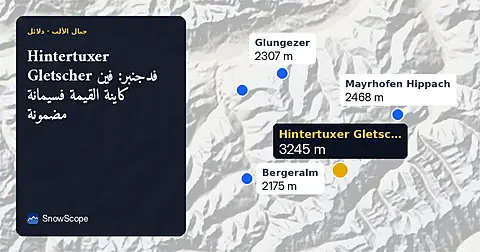
فراير 15 بسلو 3245 م، Hintertux فيها 98 سم ديال التلج فـ 46 شتا ديال التاريخ. كل شتا فاتت كانت فيها 30 سم أو أكثر فـ الأسبوع قبل عيد الميلاد هنا فوق.
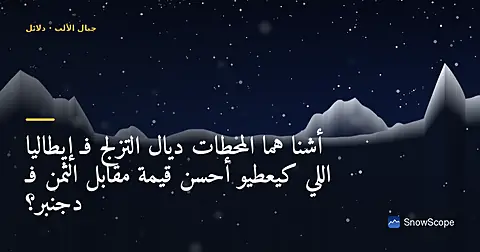
قارن حظوظ التلج فـ دجنبر وأثمنة الفورفي المراقبة ابتداءً من 40.00 EUR فـ محطات التزلج الإيطالية لرحلة الويكاند بالطوموبيل.
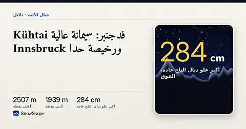
القاعدة ديال Kühtai فـ 1939 م تبقى مغطاة بالتلج كيفاش فديسمبر. فـ 15 ديسمبر عادة 60 سم فالقاعدة، 72 سم فالوسط، 112 سم فالقمة. تذكرة 6 أيام فـ EUR 269 فالموسم الخفيف لحد 18 ديسمبر.
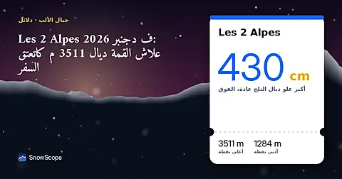
Les 2 Alpes كاتوصل ل 3511 م باش تضمن التلج ف دجنبر 2026، مع فورفي ديال 6 أيام للكبار ب 266.50 EUR.
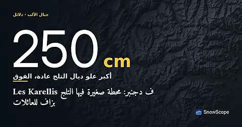
Les Karellis كتوفر 45 كم ديال البيست وواحد الباس ديال 6 أيام للكبار بـ 191,00 EUR مع احتمال ديال 98 % ديال التلج فوسط الجبل فآخر دجنبر.
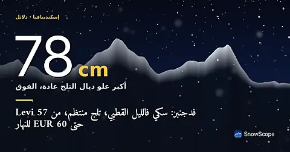
التلج ديال Levi فهمبر قوى أكثر مع الوقت. آخر 15 شتوات: 100% ديال أسابيع الكريسماس كانت فيهم 30 سم ولا أكثر. العلو الحالي فـ15 فهمبر: 38 سم. المعطيات 13 نوفمبر 2026.
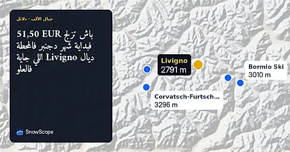
تزلج فـ Livigno بـ 51,50 EUR للنهار قبل 18 دجنبر، فاش كيوصل العلو ديال التلج فالقمة لـ 30 سم فـ 100 % من الشتوات اللي فاتو.
فـ 15 دجنبر فـ Michlifen، 89% ديال الشتوات اللي فاتو غالبا مافيهاش تلج. الفرصة الأحسن كتجي بعد الزوبعة، مافيش حساب للتاريخ. المعطيات من 13 نونبر 2026.
Montgenèvre عندها 56 سم ديال التلج فالمعتاد فديسمبر فالباز ديالها، وهادشي كيخلي السواق ديال الويكاند يلقاو تلج كتر من Sestriere اللي فجهة خرى ديال الحدود.
السكي ف Obertauern فدجنبر: 43 سم نهار 15 دجنبر عادي فالوسط، والسكيباس ديال 6 أيام ب 331 EUR قبل نوال.

فـ المحطة ديال التزلج ديال Oukaïmeden فـ المغرب، 15 دجنبر عادي يجيب بغاية 16 سم فـ الجهة المتوسطة. SnowScope يعطيك الحظوظ من 46 شتوة ديال المعطيات.

Oukaïmeden على بُعد 50 كم من مراكش. التلج ديال ديسمبر رقيق وما يتوقعش عليه: خطط حول العواصف، ما على التقويم. المعطيات من 13 نونبر 2026.

يوم 15 ديسمبر، Oukaïmeden ديال الوسط فيها 16 سم ضد Val Thorens 89 سم. تفقدنا الديار ديال المصاعد. المعطيات من 13 نونبر 2026.
Pila فوق Aosta كتقترح تمن موحد ديال 60.00 EUR للنهار مع تلج مضمون فدجنبر فالجهة الفوقانية.
المحطات ديال Saas-Fee كتوصل لـ 3556 م فين التاريخ ديال التلج ديالنا كيبين بلي 100 % من الشتوات اللي فاتو كان عندهم على الأقل 30 سم ديال التلج فمنتصف ديسمبر.
التلج فـ المنتصف ديال الجبل كايبلغ 30 سم فـ 83–100 % ديال دجنبرات فـ إسكندينافيا. الأسعار مثبتة فـ فنلندا؛ الأسعار ديال دينامية فـ نرويج و السويد. المعطيات من 46 شتوة، 13 نونبر 2026.

فرص التلج ف دجنبر من 46 شتوة وأثمنة النهار اللي تأكدنا منهم: Ski Cooper 49 $، Les 3 Vallées 75.70 €، Oukaïmeden بلا تعريفة رسمية. فين كتخدم نهار تزحلق رخيص ف دجنبر.
اكتشف البيستات الهادئة فـ St-Luc Chandolin فين العلو ديال التلج فـ نص الجبل وصل لـ 30 سم فـ 98 % من الشتوات اللي فاتو فـ أواخر شهر دجنبر.
Trysil فدجنبر: 44 سم فالوسط نهار 15 دجنبر عادي، و 83 % ديال الشتوات فيهم 30 سم فنص دجنبر؛ الأثمنة متبدلة، حجز بكري.
Valloire-Valmeinier كتوفر على 131 كم ديال البيست، واحتمال 98 % يكون العلو ديال التلج 30 سم فـ وسط المحطة فـ نص دجنبر.
الثلج ديال Zugspitze الجليدي فيه 122 سم ديال التلج العادي فـ 15 دجنبر فـ ارتفاع 2627 م؛ فـ راس Garmisch-Classic فيه 57 سم. نفس السعر، لكن العلو ديال التلج مختلف. المعطيات ديال 46 شتوات.
Mölltaler Gletscher فدجنبر: 66 سم فأول تيليسييج (2103 م) و 128 سم فالوسط نهار 15 دجنبر عادي؛ 6 أيام فالموسم الهادي ب 332 EUR.
Mt. Baker ف دجنبر: 46 in (116 cm) ديال التلج ف وسط الجبل ف 15 دجنبر العادي، والتيكي من الاثنين للخميس بـ98.80 $، كيتباع غير نهار بنهاره فالكيشة.
واش المبتدئ اللي كيخاف يقدر يتيق فـ Courmayeur ف شهر دجنبر، فاش العلو ديال التلج ف الوسط كيوصل ف المعدل لـ 60 سم ف الشتوات اللي فاتو؟
بوك من 15 إلى 21 دجمبر فـ Åre باش تكون عندك أحسن فرص ديال التلج قبل الزحمة ديال الكريسماس. 89% من الشتوات اللي فاتو كانت عندهم 30 سم فـ نص الجبل فهاد السيمانا. المعلومات من 13 نونبر 2026.


قارنّا التلج اللي كاين نهار 10 نونبر مع أكبر علو ديال التلج فكل موسم، ف 46 محطة ديال التزلج وعلى 46 موسم. البداية بالتلج كتعاون، ولكن أقل من داكشي اللي كيتخيلو بزاف ديال المتزلجين.
عاصفة نهار 4 نونبر خلات بين 8 و 13 inches ديال التلج الجديد ف خمس محطات عاليين ف كولورادو قراب من Aspen. من بعد خمس أيام، النص منو مشى. شنو كيعني هادشي لنهارات البودرة.
شحال بقات جبال البيريني بيضا كل شتوة من 2000-01، كيف كيشوفها الساتليت، والعلو ديال التلج ف10 محطات عندهم سلاسل طويلة. تلاتة ديال الشتوات ضعاف ورا بعضياتهم سالاو ف2025-26؛ وهاد الخريف بدا عادي.
خريطة ديال الميلان فـLes Grands Montets وسبع محطات تزلج أخرى كتبين شحال من الأرض كتفوت 30° و35° و40°، وعلاش هاد الحد مهم للانهيارات الثلجية.

ف 24 شتاء من 46، المحطات اللي فالجهة الإيطالية وجنوب الألب الفرنسية جاتهم شتوية كبر نسبيا من الجهة الشمالية. المبيان، العوام الكبار، والطقس اللي كان موراهم.
التلج فدجنبر كيتعلق قبل كلشي بالعلو. 46 شتوة فاتت ف676 محطة فالألب كيبينو شحال ديال التلج تتسنى نهار 1 و15 و22 دجنبر، من تحت 1200 م حتى لفوق 2400 م.
Whistler Blackcomb طاح فيها 75 سم ديال التلج الجديد فالقمة فسيمانة، ومن بعد جات عاصفة سخونة فيها 124 مم ديال الما. دليل ساهل على القاعدة، التلج الجديد، الشتا والقشرة.
برنامج رخيص ديال 3 أيام فبحيرة كومو فدجنبر بالأثمنة الحقيقية ديال 2026-27: الترينو، البابور، الفونيكولير والتزلج ف Piani di Bobbio ولا Madesimo، شحال كتوفر مقارنة مع كورتينا، والحظ ديال التلج فالعيد.

التلج ديال اليوم فليفينيو، شنو كيقول التوقع الموسمي الأوروبي على دجنبر، وعلاش العلو كيغلب الشهر السخون نهار 25 دجنبر.
التلج ديال اليوم فكورتينا، التوقع الموسمي الأوروبي لدجنبر، والحظوظ ديالنا باش يكون نهار 25 دجنبر أبيض فالدولوميت الشرقية.

توقعات جبال دولوميت لدجنبر 2026: أسخن ب 1.7 °C، شويـة أكثر رطوبة، 30 سم تلج قبل السنة الجديدة، عيد الميلاد تلج فـ منتصف الجبل. معطيات من 10 نونبر.

شحال ديال الما يقدر يحبس التلج ديال الأطلس ففبراير 2027: التوقع الموسمي الأوروبي سخون بتقريبا 3 درجات وفيه الشتا كثر فالغرب والجنوب، والحظوظ ديال التلج باقة ضعيفة فالأحواض ديال المغرب.
التوقعات ديال يناير 2027 للأطلس ديال المغرب: 69 مليون م³ ديال التلج متوقع، بزاف أقل من العادي 206. المعطيات من 10 نونبر 2026.

Bou Iblane تبقى خايبة حتى دجنبر. التوقعات الموسمية: أدفا من المعتاد بـ 2.3°C، بغا نتساقط فقط 22 سم ديال التلج الجديد، 0 سم ديال التلج على الأرض فِ 31 دجنبر. المعطيات: 10 نونبر 2026.

التوقعات الموسمية لـ Rockies: دجنبر أسخن، التلج قريب من العادي، لكن الشمال أضعف بينما كولورادو و Utah لا يزالان غير حاسمين. البيانات من 10 نونبر 2026.

دجنبر في جنوب الألب سيكون أدفا ورطبا من المعتاد، لكن العلو ديال التلج في نهاية السنة بقا قريب من الطبيعي. تحليل SnowScope من 11 نونبر 2026.

Oukaimeden كاتواجه دجنبر سخون مع 13 سم توقعات فـ 31 دجنبر, بزاف بالتحت من العادة ديال 26 سم. البيانات من 10 نونبر 2026.

Chamonix كتبدا ديسمبر معا 27 سم فالقمة بصح التلج رقيق تحتاني. الدفيئة والرطوبة كتجاهدو ضد بعضياتهم؛ توقع التلج الجديد قريب ديال النورمال ديال ديسمبر. البيانات من 10 نونبر 2026.
Vail بالأرقام: القمة العادية تقريبا 64 in (162 cm) فالوسط ف 46 شتوة اللي فاتو، مارس أكثر شهر فيه التلج، مع البيستات، الطريق والسلامة.

Zermatt بالأرقام: فين كيبقى التلج، أضمن الشهور وكيفاش توصل للقرية اللي بلا طوموبيلات، من 46 شتوة اللي فاتت.
Steamboat فـ Colorado للعائلات: شنو كيناسب الصغار بزاف، الدراري، المراهقين والواليدين، مع التلج ديال 46 شتوة اللي فاتو فتلاتة ديال العلوات.

واش Verbier مزيانة للمبتدئين؟ إمتى التلج أحسن؟ كيفاش توصل؟ الأجوبة على 4 Vallées و 46 شتوة اللي فاتت.

كيفاش تدوز أول نهار ف Park City Mountain، Utah، وإمتى تمشي: التاريخ ديالنا كيعطي تقريبا 71 in (180 cm) فالقمة العادية فالوسط ف 46 شتوة اللي فاتو.
Sella Ronda من Sëlva ف Val Gardena: الكولات ديال Gardena و Campolongo و Pordoi و Sella بالترتيب، مع التاريخ ديال التلج ديالنا ف 46 شتوة اللي فاتت.

Mt Baker، Washington: تقريبا 133 in (337 cm) فالقمة العادية فالوسط ف 46 شتوة اللي فاتو، رقم قياسي عالمي ديال التلج، وماكاينش فين تبات فالجبل.
Val d'Isère و Espace Killy للمبتدئين، المتوسطين والمحترفين، مع التلج ديال 46 شتوة اللي فاتت فتلاتة ديال العلوات.

خطط ل Mammoth Mountain حسب الموسم: تقريبا 93 in (235 cm) فالقمة العادية فالوسط ف 46 شتوة اللي فاتو، مارس أكثر شهر، ربيع طويل وشتوات كتبدل.
Kitzbühel مشهورة وواطية. شنو كيقولو 46 شتوة اللي فاتو على التلج ف 762 م، 1,377 م و 1,993 م، شنو تبدل، وأشمن سيمانات أضمن.

الخرافات على Jackson Hole مقارنة مع الحقائق والتاريخ ديالنا: تقريبا 80 in (204 cm) فالقمة العادية فالوسط ف 46 شتوة اللي فاتو، بلا نقصة واضحة.
SnowScope كتفقد خريطة التلج ديالها كل يوم ضد 2,012 محطة جبلية. فـ 9 نونبر 2026، الخريطة كانت فـ 7.7 سم غلط متوسط و صحيحة 88% ديال الوقت.

عشرة ديال النقط العملية لسفرية ديال التزلج ل Livigno: الطرقان، البرد، الحوانت بلا ضريبة، الجوج ديال الجهات والوقت الأحسن للتلج، من 46 شتوة اللي فاتت.
الوصول ل Telluride فالشتا، مطار بمطار: Telluride Regional، Montrose، الطريق 145 مع القانون ديال الجر ديال Colorado، والتيليكابين فابور حتى ل Mountain Village.
Whitewater كايتّقع في حوض متوازن الثلج في جبال Selkirks قرب Nelson. في الوسط ديال الجبل، قمم عادية تبلغ 165 سم. هكذا كايتطور يوم العاصفة في محطة ب 670 م من العمودي.
Les Arcs فيه أربعة دواوير فعلويات مختالفة، كل واحد فيه علوه ديال التلج ديالو و طابعو. اختار الحيح لشتا ديالك.
Snowbird كاينة ف الطرف ديال Little Cottonwood Canyon. غادي نشرحو ليك القانون ديال الجر، حالة الطريق، طوبيس التلج، و علاش الدريفة مهمة بزاف للعلو ديال التلج.
Whistler Blackcomb لكل مستوى، مع التاريخ ديالنا: تقريبا 370 cm فالقمة العادية فالوسط ف 46 شتوة اللي فاتو، مارس وأبريل أكثر شهور فيهم التلج.
من الفلاحة ديال Walser حتى ل Weißer Ring: التواريخ اللي صنعات Lech Zürs، ومن بعد التاريخ ديال التلج ديالنا زمان ودابا، أول خمسطاش من 46 شتوة اللي فاتو مقابل آخر خمسطاش.
Palisades Tahoe Olympic Valley كتوضع 42 ميل من Reno. دخول الشتاء كيعتمد على تحكم السلاسل، حجزات البركينج و معرفة التوقعات. معطيات من 8 نونبر 2026.

لائحة عملية ل Stowe فـ Vermont: الطبقات، حماية الوجه، الماسك، الكارات محدودين والسخانات، مربوطة بالتلج ديال 46 شتوة اللي فاتو فـ Mount Mansfield.

السكي ف Lake Louise فالبداية ديال الموسم: علاش كتبدا بكري، كيفاش كيكون التلج ديال نونبر ودجنبر عادة ف 46 شتوة اللي فاتو، وكيفاش تتزلج على تلج مازال رقيق.